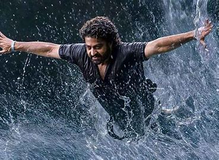

Devara: Part 1 is a 2024 Indian Telugu-language action drama film[6] written and directed by Koratala Siva and jointly produced by Yuvasudha Arts and N. T. R. Arts. The film stars N. T. Rama Rao Jr in dual roles, alongside Saif Ali Khan, Janhvi Kapoor, Shruti Marathe (in her first Telugu film), Prakash Raj, Srikanth, Shine Tom Chacko, Narain, Kalaiyarasan and Murali Sharma.
The film was officially announced in April 2021 under the tentative title NTR30,
as it is Rama Rao's 30th film as a lead actor, and the official title was announced in May 2023.
In late-2023, the film was split into two-parts. Principal photography for this part commenced in April
2023 and wrapped in August 2024. Filming took place in Hyderabad, Shamshabad, Visakhapatnam, Goa and
Thailand. The film has music composed by Anirudh Ravichander, with cinematography handled by R. R
athnavelu and editing by A. Sreekar Prasad respectively.Devara: Part 1 released worldwide on 27
September 2024 in standard, IMAX, 4DX, ScreenX, D-Box, MX4D and ICE formats to mixed reviews from
critics and audience alikePlotIn 1996, in a high-level security meeting discusses the security
threats to the 1996 Cricket World Cup in India from Daya and his brother, Yethi.The police capture
Yethi's henchman to interrogate him. They learn Yethi was last seen with Muruga, a politician-cum-
smuggler. Learning that Muruga is dead, they go undercover as smugglers wanting to illegally smuggle stuff off the coast. They approach DSP Tulasi who asks them to visit the Red Sea villages in the Ratnagiri mountains. They visit Bhaira, chief of one such village and threaten him to smuggle goods, only to be violently rejected by him. They find Singappa, who takes them offshore in a boat. The officer tries to make an offer to him by showing off a diamond ring which is abruptly thrown into the sea by Singappa. As the officer dives to retrieve the ring, he finds skeletons in the seabed. Singappa starts narrating the story which begins in the 1980s.
Inhabitants of these villages were once warriors defending the seas, but after India got its Independence, they lose relevance, reduced to smugglers in the infamous Red Sea. Devara is a chieftain of one of the villages and part of the group which smuggles for Muruga from the merchant ships along with Bhaira. Unbeknownst to them, they smuggle illegal arms which used in robberies, and one such incident occurrs near their villages. During a smuggling expedition, they are caught by the coast guard and the commander of the vessel, Irfan, reveals the items they were smuggling and how he expected honor amongst the descendants of the warriors.
Devara has a change of heart and decides to stop their smuggling operations, which is not liked by the other chieftains, including Bhaira. They hatch plans to kill him but fail. Devara successfully stops the villagers from entering the seas for smuggling. He disappears after an attempt to kill him and writes a message on a rock near the shore that he would continue to kill those who venture out to the high seas for smuggling. Years pass, and everyone adopts fishing as their livelihood as Devara killed those smuggling, while remaining invisible to the villagers. His son, Varadha "Vara", grows up to be the quiet opposite in demeanor to Devara, who was seen as a brave warrior. Thangam, the daughter of the chieftains of one of the other villages, is his childhood friend and love interest.
She refuses to reveal her feelings for him until he did something which would honor his father. The timid Vara tries to make his family forget about his father, who according to him, abandoned them. On the other hand, Bhaira prepares a private army, including his friend Kanjura's son, Samara to kill Devara. Tulasi and Muruga again offer an opportunity to Bhaira to smuggle for them along with killing Devara, the biggest thorn for their operations. Bhaira's men starts flirting with Devara's daughter and wife to reveal his whereabouts at sea, as Vara keeps quiet and stayed away from violence. During their annual Ayudha Pooja fight, Vara eventually beats Bhaira's men. After witnessing his surprising valor and unknowingly killing one of his men after sexually harassing his sister, Bh